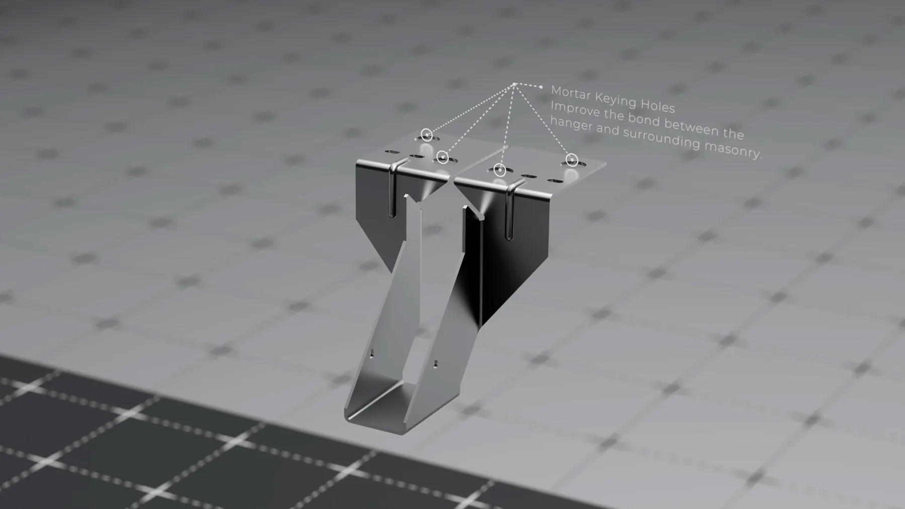

Portfolio 3D cần có gì: sáu món và cách bày
Portfolio 3D cần có gì thì câu trả lời ngắn là sáu món, không phải sáu mươi: một món sản phẩm sạch lưới, một món vật liệu khó, một món ánh sáng kể được không khí, một món bối cảnh, một đoạn chuyển động ngắn và một trang mô tả quy trình. Người xem hồ sơ của bạn thường dừng lại một tới hai phút, nên thứ quyết định là món đầu tiên họ nhìn thấy và món yếu nhất họ tìm ra, chứ không phải tổng số bài bạn đăng.
Phần lớn hồ sơ bị bỏ qua không phải vì người làm kém. Chúng bị bỏ qua vì chúng là một đống ảnh xếp cạnh nhau, không nói được người làm giỏi ở khâu nào và nhận được việc gì. Bài này đi theo hướng ngược lại: mỗi món trong bộ hồ sơ phải chứng minh đúng một điều, và nếu không chứng minh được gì thì món đó nên bị bỏ ra.
Portfolio 3D cần có gì: sáu món và việc mỗi món phải chứng minh
Một bộ hồ sơ tốt giống một bộ bằng chứng hơn là một cuốn album. Người xem cần biết bạn làm được gì mà không cần họ hỏi thêm. Sáu món dưới đây bao phủ gần hết những câu hỏi mà một studio hoặc một khách hàng sẽ đặt ra.
1. Một món sản phẩm có lưới sạch
Thường là món mở đầu. Chọn một vật có mặt cong gặp mặt phẳng, ví dụ một thiết bị gia dụng hoặc một chai đựng. Người xem nhìn vào đây để biết bạn kiểm soát được hình khối chứ không chỉ che lỗi bằng ánh sáng. Nếu bạn chưa chắc bắt đầu từ đâu, thứ tự năm bước đầu nằm ở bài học modeling 3D từ đâu.
2. Một món vật liệu khó
Kim loại xước, thuỷ tinh có độ dày, vải, da, hoặc chất lỏng. Vật liệu dễ là thứ ai cũng làm được sau hai tuần, nên nó không chứng minh gì. Một bề mặt kim loại có vết gia công đúng hướng nói nhiều hơn mười ảnh nhựa bóng.
3. Một món ánh sáng có không khí
Cùng một khối, đặt trong hai điều kiện sáng khác nhau, và bạn nói được vì sao chọn phương án cuối. Đây là món phân biệt rõ nhất giữa người mới và người đã làm nghề. Năm lỗi làm render trông rẻ tiền được liệt kê trong bài học lighting trong Blender, nên soát lại món này theo danh sách đó trước khi đăng.
4. Một món bối cảnh hoặc không gian
Một góc phòng, một quầy trưng bày, một khu gian hàng. Món này chứng minh bạn tổ chức được cảnh nhiều vật thể, biết bố cục và biết giữ file không vỡ khi nặng. Nó cũng là món gần nhất với việc thật trong mảng sự kiện và trưng bày.
5. Một đoạn chuyển động tám tới mười hai giây
Không cần kể chuyện. Một vòng quay quanh hoặc một cú đẩy máy chậm đã đủ, vì mục đích là chứng minh khối của bạn chịu được mọi góc nhìn. Ảnh tĩnh cho phép bạn giấu một mặt chưa xong, đoạn quay thì không. Trình tự dựng một shot hoàn chỉnh nằm trong bài dựng TVC 3D.
6. Một trang mô tả quy trình
Món bị bỏ quên nhiều nhất và lại là món ăn điểm nhất. Một trang gồm ảnh lưới, ảnh bố trí đèn, hai bản nháp bị loại và vài dòng giải thích. Người tuyển nhìn trang này để biết bạn làm việc có đầu có đuôi hay chỉ may mắn ra được một ảnh đẹp.

Người tuyển ở studio và khách hàng trực tiếp tìm thứ khác nhau
Nhiều người làm một bộ hồ sơ rồi gửi cho cả hai nhóm. Hai nhóm này đọc hồ sơ theo hai cách khác hẳn, nên ít nhất bạn nên biết mình đang nhắm ai để xếp thứ tự món cho đúng.
| Tiêu chí | Studio tuyển người | Khách hàng thuê ngoài |
|---|---|---|
| Nhìn trước tiên | Độ sạch của khối và lưới | Ảnh cuối có dùng được cho hàng của họ không |
| Quan tâm tới quy trình | Rất quan tâm, vì bạn sẽ làm chung file | Ít quan tâm, trừ khi dự án dài |
| Thái độ với bài tự đặt | Chấp nhận, miễn ghi rõ | Thích món cùng ngành hàng của họ hơn |
| Giá trị của đoạn chuyển động | Cộng điểm, không bắt buộc | Quan trọng nếu họ cần nội dung quảng cáo |
| Số món cần xem | Bốn tới sáu, xem kỹ | Hai tới ba, xem nhanh |
| Điểm trừ nặng nhất | Món yếu lẫn trong bộ | Không thấy món nào giống hàng của họ |
Kết luận thực dụng từ bảng này: giữ một bộ lõi sáu món, rồi đổi thứ tự và đổi món mở đầu tuỳ người nhận. Nếu bạn nhắm mảng hàng tiêu dùng thì món sản phẩm phải nằm đầu, và phần kỹ năng cần có cho mảng đó nằm trong bài khoá học dựng hình sản phẩm.
Trình bày một món: thứ tự ảnh quyết định ấn tượng
Cùng một món, cách bày khác nhau cho kết quả khác hẳn. Thứ tự dưới đây là thứ tự chúng tôi thấy hiệu quả nhất khi xem hồ sơ của người tới xin học và xin việc.
Ảnh đầu là ảnh mạnh nhất, cắt đúng khung, không viền, không chữ. Ảnh thứ hai và ba là góc khác và một ảnh chi tiết gần. Ảnh thứ tư là lưới hoặc bản tách rời. Ảnh thứ năm là bố trí đèn. Cuối cùng là ba tới bốn dòng mô tả: đề bài là gì, bạn làm phần nào, phần nào khó nhất và bạn giải ra sao.
Người xem hồ sơ không chấm điểm món đẹp nhất của bạn. Họ tìm món yếu nhất, vì món yếu nhất mới nói được mức sàn mà bạn luôn làm được. Bỏ một bài trung bình ra khỏi bộ hồ sơ thường làm cả bộ mạnh lên.
Ba dòng mô tả quan trọng hơn vẻ ngoài nhiều người tưởng. Khi bạn viết được phần nào khó và bạn xử lý ra sao, người đọc hiểu bạn nhận thức được việc mình làm. Khi phần mô tả chỉ có tên phần mềm và vài thẻ gắn, hồ sơ của bạn trông giống mọi hồ sơ khác.
Những thứ làm portfolio 3D mất điểm nhanh nhất
Phần này rút từ những bộ hồ sơ chúng tôi được gửi tới xem. Lỗi lặp lại nhiều hơn người ta nghĩ, và phần lớn sửa được trong một buổi.
Trộn bài theo hướng dẫn vào mà không ghi nguồn là lỗi nặng nhất. Người trong nghề nhận ra ngay những bài phổ biến, và khi họ nhận ra, mọi món còn lại cũng bị nghi ngờ theo.
Lỗi thứ hai là nhồi số lượng. Mười hai món trong đó bảy món dở kém hơn hẳn bốn món chọn lọc. Lỗi thứ ba là ảnh quá tối hoặc quá nhiều hậu kỳ tới mức không còn nhìn ra khối. Lỗi thứ tư là không nói rõ phần nào do bạn làm trong một dự án nhóm, thứ sẽ thành vấn đề lớn nếu người tuyển hỏi lại ở vòng phỏng vấn.
Lỗi cuối cùng thuộc về kỹ thuật trình bày: ảnh nặng vài chục megabyte, trang tải chậm, người xem thoát trước khi hình hiện ra. Xuất ảnh ở cạnh dài khoảng 2000 pixel là đủ cho gần hết mọi nhu cầu xem trên màn hình.
Danh sách kiểm tra trước khi gửi portfolio 3D đi
Chạy qua danh sách này với bộ hồ sơ hiện tại của bạn. Thiếu quá hai dòng thì chưa nên gửi.
- Món mạnh nhất nằm ở vị trí đầu tiên, không phải món mới nhất.
- Không còn món nào bạn phải giải thích hộ nó khi người khác xem.
- Mỗi món có ít nhất một ảnh lưới hoặc một ảnh cho thấy cấu trúc.
- Mỗi món có ba tới bốn dòng nói rõ đề bài và vai trò của bạn.
- Bài theo hướng dẫn được ghi rõ nguồn, bài tự đặt được ghi rõ là tự đặt.
- Có ít nhất một món thuộc đúng ngành hàng của nơi bạn đang gửi tới.
- Toàn bộ ảnh tải xong trong vài giây trên mạng di động.
- Tên và cách liên hệ nằm ngay trang đầu, không bắt người xem tìm.
Dạng bằng chứng mà một nơi dạy nghề nên đưa ra cũng theo logic ấy, có cả bài tốt lẫn bài còn yếu kèm nhận xét, như trang bài tập học viên của chúng tôi. Ảnh đẹp thì tải ở đâu cũng có, còn một file sạch và một nhận xét cụ thể thì không mượn được.
Portfolio 3D cần có gì khi bạn chưa đi làm ngày nào
Đây là tình huống của gần hết người mới, và nó không phải trở ngại lớn như nhiều người sợ. Không ai chờ bạn có dự án thương mại ở bộ hồ sơ đầu tiên. Thứ họ chờ là bằng chứng rằng bạn làm việc được theo một đề bài.
Cách làm gọn nhất: chọn ba sản phẩm có thật đang bán trên thị trường, tự viết cho mỗi món một đề bài ngắn như cho một ảnh trưng bày và một ảnh chi tiết, rồi làm đúng như đang nhận việc, kể cả việc đặt hạn hoàn thành cho mình. Ghi rõ trong mô tả rằng đây là bài tự đặt. Không ai trừ điểm sự trung thực, nhưng việc nói quá về kinh nghiệm thì bị phát hiện rất nhanh ở vòng sau.
Nếu bạn muốn làm bộ hồ sơ theo lộ trình có người chữa bài từng tuần thay vì tự mò, cách chia sáu món theo từng chặng nằm ở bài kèm 1 kèm 1 làm portfolio 3D. Còn nếu bạn đang phân vân nên nhắm nhánh nào trong nghề trước khi dồn sức vào hồ sơ, trang nghề 3D artist mô tả các nhánh và loại việc tương ứng.
Hỏi đáp
Portfolio 3D cần có bao nhiêu món là đủ?
Sáu món hoàn chỉnh là đủ cho vòng hồ sơ đầu tiên, và bốn món cũng đã mở được cửa nếu cả bốn đều sạch. Số lượng gần như không được tính điểm, vì người xem chỉ lướt khoảng một tới hai phút và dừng ở món yếu nhất chứ không ở món mạnh nhất. Thêm món thứ mười hai mà nó kém hơn mức trung bình của chín món trước thì bạn vừa kéo cả bộ xuống.
Bài làm theo hướng dẫn trên mạng có được đưa vào portfolio 3D không?
Được, với hai điều kiện. Một là bạn ghi rõ đó là bài theo hướng dẫn và ghi tên tác giả gốc. Hai là bạn đã đổi ít nhất một lớp của bài, thường là ánh sáng hoặc vật liệu, rồi nói được vì sao đổi. Giấu nguồn là rủi ro lớn nhất, vì người tuyển trong nghề này thường đã xem qua đúng những bài hướng dẫn phổ biến đó.
Chưa có khách hàng nào thì lấy đề bài ở đâu?
Lấy một sản phẩm có thật đang bán, tự đặt cho mình một yêu cầu cụ thể như một ảnh trưng bày và một ảnh chi tiết, rồi làm đúng như đang nhận việc. Ghi rõ trong phần mô tả rằng đây là bài tự đặt, không phải việc đã giao. Cách này cho bạn đề bài gần với thực tế mà không phải nói sai về kinh nghiệm.
Nên đăng portfolio 3D ở đâu, ArtStation hay trang riêng?
Nơi đăng ít quan trọng hơn cách sắp xếp. Một trang có sẵn cộng đồng giúp bạn được nhìn thấy, một trang riêng giúp bạn kiểm soát thứ tự và phần chú thích. Nếu chỉ chọn một thì bắt đầu ở nơi có sẵn người xem, miễn là món mạnh nhất nằm ở ô đầu tiên và mỗi món đều có mô tả ngắn về vai trò của bạn.
Portfolio 3D có cần đoạn chuyển động không hay ảnh tĩnh là đủ?
Ảnh tĩnh đủ để xin việc dựng hình và kết xuất sản phẩm. Một đoạn quay quanh dài tám tới mười hai giây chủ yếu để chứng minh khối chịu được mọi góc nhìn, thứ mà một ảnh tĩnh chọn góc đẹp có thể che giấu. Nếu bạn nhắm mảng quảng cáo hoặc sự kiện thì đoạn chuyển động chuyển từ nên có thành bắt buộc.
Nếu bạn muốn một nhận xét thẳng về bộ hồ sơ đang có, gửi cho chúng tôi hai ba món và một câu nói rõ bạn đang nhắm loại việc nào. Chúng tôi sẽ chỉ ra món nên bỏ ra trước khi nói tới món nên thêm vào. Muốn đi theo lộ trình có đầu ra từng tuần thì hai hệ ở trang khoá học 3D Blender ghi rõ mỗi chặng bạn phải nộp được gì, và nếu bạn mới bắt đầu thì tải cẩm nang Blender làm hết phần bài tập trong đó trước đã.
Đọc tiếp


Muốn được sửa bài trực tiếp?
Coaching 1:1 online, đồng hành trọn một năm. Để lại thông tin, tôi xem qua và tư vấn bạn nên bắt đầu từ đâu.
Đăng ký tư vấn